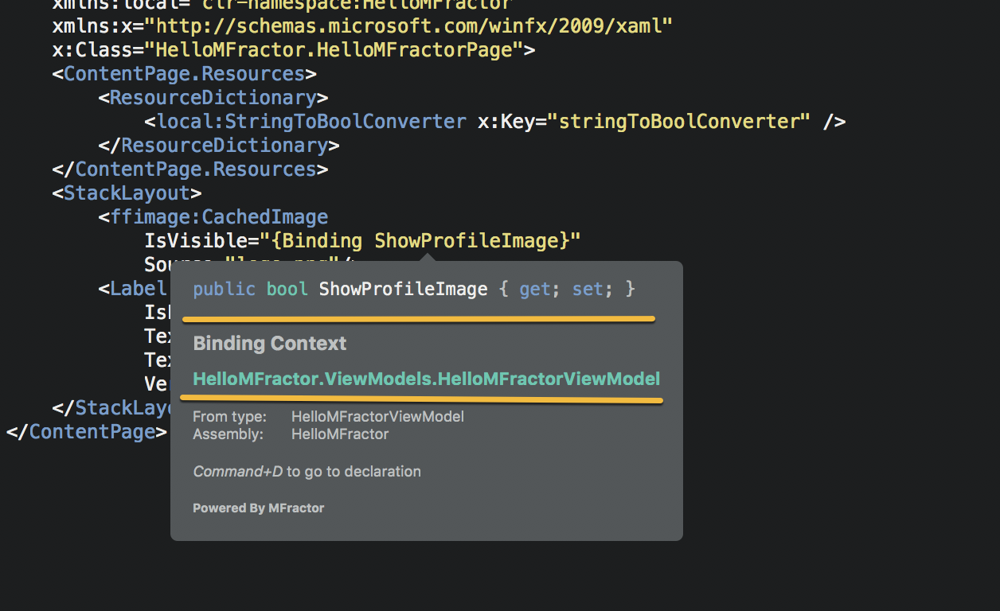
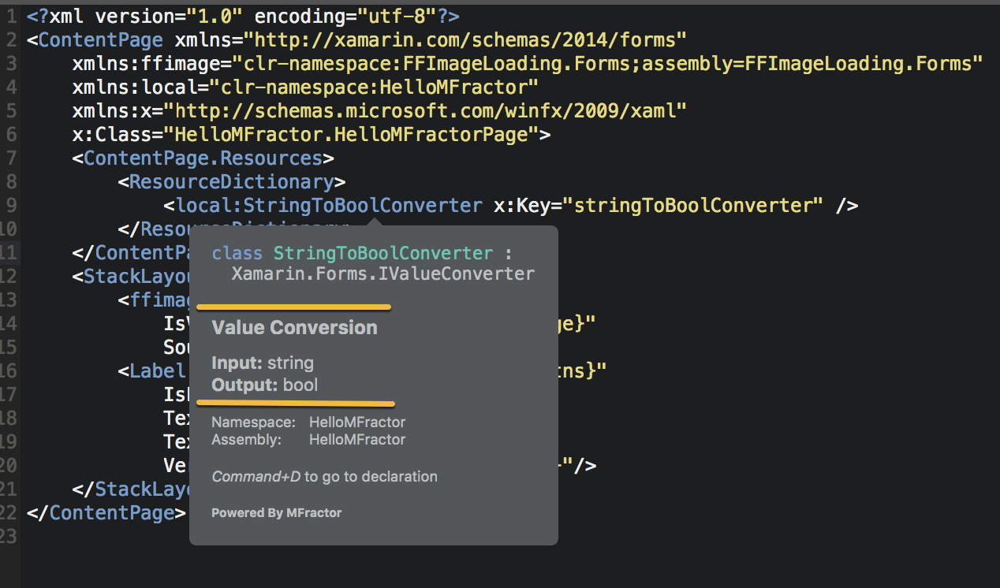
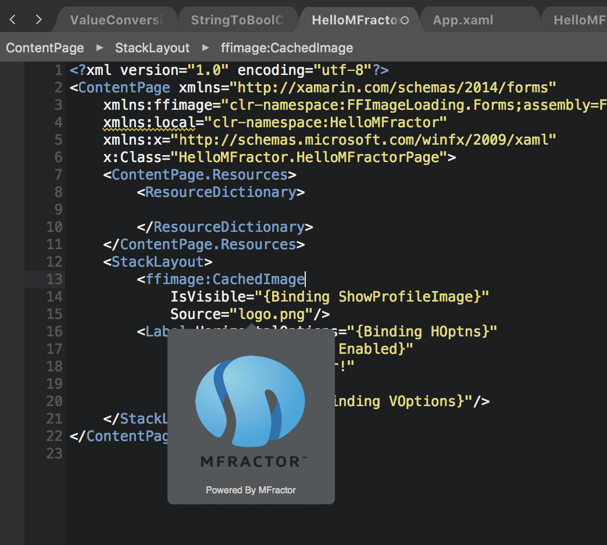

Navigation
Move efficiently through a Xamarin.Forms project with rich Xaml code navigation
Mvvm Navigation
When MFractor can implicitly resolve the View - Code Behind Class - ViewModel relationship, the Mvvm navigation shortcut suite is activated.
We can access these shortcuts by right clicking in a .xaml, .xaml.cs or ViewModel.cs code file:
- Go To View Model: Jumps you to the view model related to a view or code behind class.
- Shortcut:
Alt + Left Shift + 1
- Shortcut:
- Go To Code-Behind Class: Jumps you to the code behind class related to a view or view model.
- Shortcut:
Alt + Left Shift + 2
- Shortcut:
- Go To Xaml View: Jumps you to the xaml view related to a view model or code behind class.
- Shortcut:
Alt + Left Shift + 3
- Shortcut:
For example:

Xaml Go-To Symbol
Just like C#, we can jump to the declaration of a symbol when in our Xaml.
To perform this, click onto a Xaml element (such as a node, attribute or expression) and press Command + D.
We can also right click on any Xaml element and select the Go-To Xaml Symbol shortcut:

Xaml Tooltips
When in a .xaml file, we can hover over any Xaml element to view a .NET style tooltip:

We can also hover over markup extension expressions to view the evaluation result:

MFractor also supports the following additional types of tooltips.
Binding Context Tooltips
If you hover over a Binding markup extension expression that can be evaluated, MFractor will render the full .NET type of the binding context into the tooltip:

This is useful for understanding the behaviour of your View at runtime.
Value Conversion Tooltips
When you have annotated implementations of IValueConverter with the value conversion attribute, MFractor supports rendering of input, output and parameter type into the tooltip window.
When you hover over a Xaml element or markup extension expression that evaluates to a IValueConverter, MFractor will render out the input and output types when available:

Color Tooltips
When MFractor encounters a Xaml attribute that uses the Xamarin.Forms.Color or System.Drawing.Color type, it will attempt to evaluate the color hex or color literal.
If successfully evaluated, it will render the color value into the resulting tooltip:

Image Tooltips
MFractor supports inline image tooltips; these tooltips will display a preview of the image that you are referencing from within your Xaml:
Image tooltips are activated when you hover over the value of a Xaml attribute whose type is Xamarin.Forms.ImageSource; when MFractor encounters a value that looks like an image reference to a bundled resource (IE: logo.png), it attempts to locate that image within any iOS or Android projects that reference the assembly.
MFractor searches the Resources folder within linked iOS projects and the Resources/drawable* and Resources/mipmap* folders on Android.
When MFractor finds an image that matches that image name, it will render it into the image into the tooltip window:
